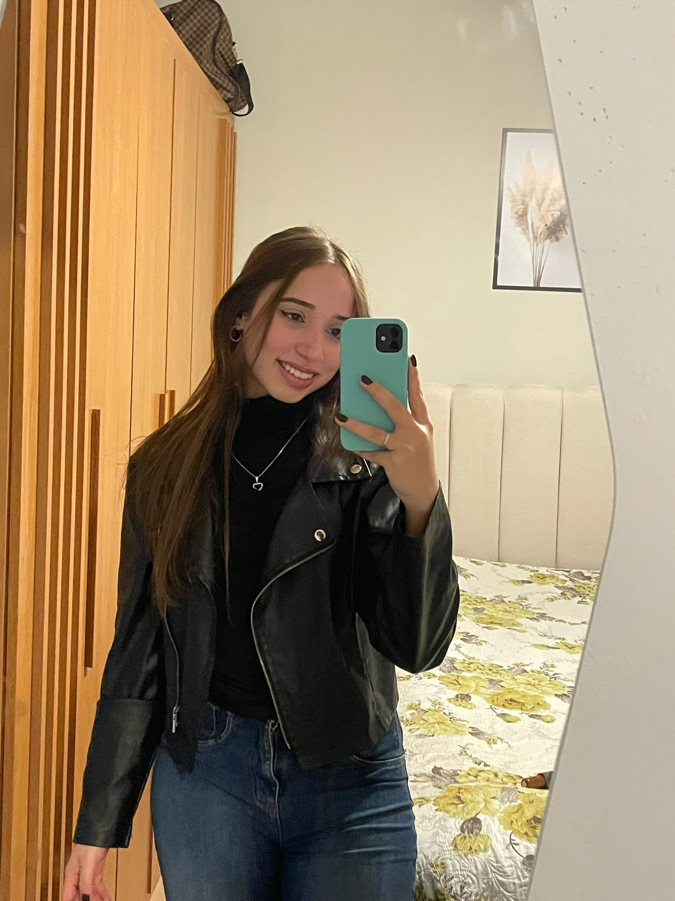

Sobre Mim
Meu nome é Yasmin Czarnik Alegria e Silva e atualmente atuo como Analista de Prospecção em uma empresa têxtil.
Sempre tive interesse pela área de tecnologia, gosto de aprender novas ferramentas e soluções que possam facilitar o dia a dia das pessoas.
Sou uma pessoa dedicada, comunicativa e que busca constantemente desenvolver novas habilidades profissionais e pessoais.